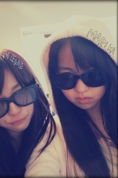
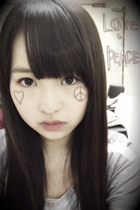

2012/0324Sat100回目*marika
いつも読んでくださってる方、
初めて読んでくださった方、
コメントしてくださった方、
ありがとうございます
まりかです。
ついにBloG更新が100回目になりました‼
＼ばんざーい ／
／
／私がいつもBloGの最初にかいているこの4行。
＊＊＊
いつも読んでくださってる方、
初めて読んでくださった方、
コメントしてくださった方、
ありがとうございます
＊＊＊
みなさんへの感謝の気持ちを忘れないように。
良いきもちで読めるように ♪
♪
♪いつも最初にかいています。
まりかの三要素は
ブログ
ファッション
自由
です
前からBloGをかくのめっちゃ楽しみにしてて
毎日更新しよう‼
と思ってました。
写真も沢山載せて、
もっと乃木坂46を知ってもらえるように:D
伊藤万理華を知ってもらえるように。
毎日更新は達成できてないけどね、
こうやって100回目までこれたのは
みなさんがいるから^^
あったかくてやさしくて
時におこって
時に泣いて
一緒に喜んで
一緒に悲しんで
一緒に笑って
もう、家族じゃないかっっ
乃木坂family
大切な存在です。
...て前に同じこと言ってた‼
私のBloGのこのノリは
ずっと変わることはないです
毎日のこと、思っていること
全部自分の感覚でかいてるからね。
自由にね:D♪
これからも楽しんで、
言いたいこと言えるBloGを
更新しよううんそうしよう‼
これからも走る‼走る‼
走るぞうらーーーーー
これからもよろしくお願いします‼
明日の名古屋個別握手会楽しみ
いっぱいしゃべってにぎにぎしましょっ
ベビたん*****bA by marika
2012/0322Thu99回目*marika
いつも読んでくださってる方、
初めて読んでくださった方、
コメントしてくださった方、
ありがとうございます:)
*****
沢山のコメント、本当にありがとうございました。
心に響いて、胸が熱くなって、
...泣いてしまった。
あっ、また泣いたね？
なんて言わないで‼
私、本当にみなさんに感謝したい。
ことばじゃ足りません。
私はみなさんの声で
何度も何度も助けられてるんだな。
って本当に思いました。
みなさんがいてくださるから
私は頑張れるんだな。って
だから
感謝の気持ちをちゃんとかたちで表したい。
「成長したね」
と思ってもらえるように。
もっとだいすきになってもらえるように。
アンダーとして、学んだこと。
これから学ぶこと。
全て自分にとって大切なことなんだ。
必要なことなんだ。
うん＊
遠くてもいいんです。
でも、離れないでください。
ずっと見ててください。
待っててください。
いつか、チャンスの順番がくるまで...
*****
今日はLesson前にねねが
お家に遊びに来ました。
いやー最近部屋掃除してたから
よかったー
ねねがなんかうきうきしてて
こっちの伊藤家を占領してました
ねね「私、人の部屋探るのすきなんだよね～」
まりか「ひいぃぃー」

伊藤ちゃんずだうぇーい
べっ別に調子乗ってねぃしっっ
一緒に歌とダンスの練習もしてました
お家で遊ぶのもいいね☆
Lesson、大変だけどもやっぱり楽しい‼
楽しむことって大事だな。
楽しんだら自然と笑顔になるもんね:D
明日も頑張るっっ
質問回答します‼
..............
好きなスポーツはなに？
 ダンス♪
ダンス♪ベビたんは中学の時何部だったの？(*^^)v
ずっと帰宅部だったよー
でも、その分バレエめっちゃ通ってた
大阪行ったらベビたん喜んでくれる？
そりゃもう毎日会いたいもん‼うれしいです＊
テスト勉強はどうやってやってますか？
ノートに書いてあるのを裏紙にひたすら書きまくるよ‼
テストどうだった？(*'ω'*)
うん:)なんとかっ
まりりは髪の毛染めたいとか思う？
一度は染めてみたいなーて思うっでも、もともと茶色めなんだ。
けっこう今の髪色すきよ
好きなサイリウムの色はなんですか？
まりちゃんの好きなサイリウム
買いに行きますε=ε=(ノ≧∇≦）ノ
乃木坂カラーが一番いいなでも、ピンクすきよー
おとめっ
まりちゃんってよんでいい？
まりちゃんでいい？？
さすがになれなれしいかな？？
おっ
まりちゃん派多数！
ううんっなれなれしいだなんて‼
むしろうれしいっ
ぜひ呼んで下さい
べびたん単推ししたら
どんな特典ありますか？(笑)
そりゃもう......
てれてれ。xD
俺、女の子の関西弁大好きなんだ＼(^o^)／！
万理華ちゃんもっと関西弁
出していかないの？？
うん...出身は大阪やけど、ちょっとしか住んでなかったから
今は神奈川出身って言ってるし、
うーん...
そんなに使わんようにしてる
しゃべったら普通に関西弁出るけどね
べびたんの好きな顔文字は何ですか??
それ使ってイイですか(・◇・)？
(´･_･`)どうぞっ‼
どんどん使っちゃて
かーわいーなああぁ。
これいやされるわー
「なまら」の意味は？？
『なまら』
これはどーゆー意味でしょー!?
簡単かな？
ちっちっちばかにしちゃいかんよ。
よゆーっしょ‼
超、めっちゃ
て意味だろう どやーーー
どやーーー
どやーーー新しいあだ名つけていい？
ん‼そうだね。ずっとベビたんていうのはさすがに...
て自分でも思ってる
私も今考え中なのよ><
いちばん好きなパンは？
メロンパンかな？
んっ⁇イメージはメロンパンなのかしら
おいしいけど、チーズパンには負けるね
ＥＸＩＬＥは、好きかな？
もし好きなら、一番好きな曲は？
真洋がチャリティーライブでライジングサン踊ってたけど、
よく一緒に踊るよ
チューチューもすきです:D
べひたんの好きなキーホルダー
とかありますか？
すきなキーホルダーかあ。
なんだろなキーホルダーとかはLEGOとかかわゆいなって思います♪
カラフルで変なやつもすきです^^
中2の人が憧れちゃってもいいですかね...？
うれしいっ‼本当にうれしいです。
憧れてくださるなんて。
私でいいのかな?て思う。
ありがとう
オーディションでRIVER
踊ったの？☆ミミ
自分の特技てきなので
披露したのかな？
踊りました♪ダンスだけね
ちなみに私は携帯に
「べびたん辞典」
つくってます←ひく？笑
ひくっ
ぜひ本にして売りましょう笑
個別は私服なのかな？
個別の時はどんな髪型、
服装で来るのかな？
いひ。おーたーのーしーみー
ねぇ、眠いんだけど
一緒に寝てくれる？(・ω・｀)
あー眠たい寝れない
乃木坂の事考えると寝れないよー
そばで子守唄うたうよ⁇「ナイフ」は一番好きなPV。
やっぱり，撮影のときのこと詳しく知りたい。
ありがとうございます><ちゃんと記事に書くね‼
載せたい写真もあるから‼
待っててください
ベビたん的に女子力高いメンバーて誰?
まいまい
あああマリカー俺もきのこ頭の子使う!!!
ちなみにキノピオ君だから
覚えたげてね(´・ω・｀)笑
えっ知ってるよ。キノピオちゃんでしょ⁇
あえて言わなかったんだよ‼
まいまいによるとこの子けっこう強いそうです
好きな映画調査中です!!
好きな映画教えて～!!!
パコと魔法の絵本HIGH SCHOOL MUSICAL
バックトゥザフューチャー
サンダーバードの実写版
とか
べびたんファッション好みすぎてやばい！
おれも古着とか好きやわ（＾Ｏ＾☆♪
服の話とかしてくれるー？
もちろん

いっぱい話したいなっ
べびさんは抱っことおんぶ、どっちが好き？
...おんぶ
俺のくせしてピンク好きって珍しい？
男だからとか全然関係ないです
ありあり‼
ピンクいいですよねx)
ピンクの中にもいろんな色がありますよね。


それはピンク色以外もだけどもね。
ベビたんはマンガとかよむんかな？
もし読むんやったら好きなやつ教えて
君に届けストロボエッジ
アオハライド
ハチミツとクローバー
ご近所物語
です＊
萌え～って言ってもいい？
もえもえっ...あ。
私はそんなの似合わんかった笑
よし、メイド服着よう。←
べびたんが普段似てるって言われる
芸能人は誰ですか？
オーディションのときから井上真央さんに似てると言われます。
恐縮です><
斜め横顔でニッて笑った顔が特に‼て
ますます、人気が出ても仲良くしてくれますか？(照)
てれちゃうなあ。てれてれします。
もちろんよx)
みなさんからのコメントは
かかさず読んでるし、
みなさん一人一人が私にとって
すごく大切な存在です。
大切な大切なfamily ChU
ChU
ChUダンスがうまい人といえば、
ろってぃのイメージが強いみたいだけど、
僕はベビたんも相当うまいと思うんだけど、
乃木坂入る前になんかやってたの？
ダンスだいすきだからめっちゃうれしいっ
バレエはずっと習ってたけどね、
ダンスも昔からすきで
ちゃんとは習ってなかったけど、
踊ることがすきなんです♪
"可愛い"と"きれい"と"かっこいい"
どれが一番言われたいですか？
どれもうれしいよーまだ、"きれい"早いんかなあー←
あー←なまえ握手会の時いうから
覚えてくれる？(笑)
うんブログに毎日コメ
してれば名前いえば
覚えててくれますか♪？
いつもコメントしてくださる方、なまえ覚えていますよ
まりちゃんは犬派？猫派？
どっちもかわいいやーんx(選べないよー
...てこのデコメねこちゃんや。笑
今日はここまで
..............
長文読んでくださって
ありがとうございました
あと、一回で100だ‼
明日も元気に頑張りまりかです
ベビたん*****bA by marika
2012/0319Mon98回目*marika
いつも読んでくださってる方、
初めて読んでくださった方、
コメントしてくださった方、
ありがとうございます‼
昨日の乃木坂ってどこ？は、
Second選抜の発表でした。
私は発表の場にいませんでした。
全員参加だった収録に出れなかった。
...。
自分は今回のチャンスを逃してしまいました。
アンダーとして頑張ります。
私を応援してくださるみなさん、
期待に応えられなくて本当にごめんなさい。
今まで、アンダーでいたとき、
辛くて苦しい経験を味わいました。
乃木坂はスケジュール連絡が
メールで送られてくるのですが、
アンダーがOFFの日は
選抜メンバーが頑張っていて
家で何もすることがなく、ただ悔しくて、
選抜は今何をしているのか
いつもそのことから頭が離れなかった。
でも私は
これだけじゃまだ足りないんです。
もっと辛い経験をして、
もっともっと強くならなきゃいけない。
そしたら努力したその分、
絶対返ってくるんだ！
選抜が理由があって出演できないとき、
代わりに出演して、舞台に立てた。
喜びました。
舞台に立てる！踊れる！
って。
その時私は大きなチャンスをもらったんです。
代わり
アンダー
だけども、舞台に立てた時
「このチャンスを逃したくない。
沢山アピールしなきゃ」
とひたすら歌って踊りました。
Second選抜に選ばれたメンバー
本当に本当におめでとう＊
選抜の支えになります。
任せてください。
何かあったら言ってください。
でも絶対絶対負けない！
いつも応援してくださるみなさん、
何かあったらここではき出していいよ
と優しく言ってくださるみなさん。
悔しい。悔しくてたまらない。
放送を見てすごい泣きました。
わんわん泣きました。
収録に出たかったな。
あの場で発表を聞きたかったな。
みなさんからのコメントを読んで
また泣きました。
期待に応えられなかった。
本当にごめんなさい。
泣かないで、前に進もう
と言ってくださったみなさん、
気持ちを入れ変えます。
アンダーとして、何ができるか
自分に足りないものは何か
もう一度よく考えて、
前に進みます。
坂を上ります。
これからも私の背中を押してください！
辛い時があれば泣きます。
でも絶対、最高の笑顔を忘れないから。
ベビたんの笑顔が好き
と言ってくださるみなさん。
笑って‼
にーーーーーーーーーー‼
前向きになれるのはみなさんのおかげ。
パワーアップした万理華を見ててください！
これからも感謝。
みなさんがだいすきです。
ベビたん*****bA by marika
2012/0318Sun97回目*marika
いつも読んでくださってる方、
初めて読んでくださった方、
コメントしてくださった方、
ありがとうございます‼
ベビたんです
昨日はお疲れ様です‼
チャリティーライブ
「いま、私たちにできること」
あいにくの雨でしたが、
沢山の方が参加してくださって
とても嬉しかったです＊
私が出演したのは
♪会いたかったかもしれない
♪左胸の勇気
♪乃木坂の詩
まいまい、らりん、せいら、ねね、私
のトークが一番最初でした
緊張した><
元気の源はやっぱり乃木坂familyのみなさん なのよ
なのよ
なのよそんなみなさんの元気の源は⁇せいっ←←
よみうりランドの時に
初披露だった左胸の勇気にも
出演することができなかったのが
悔しかったです;(
でも、昨日のチャリティーライブで
みなさんの前で披露できたことが
本当に嬉しかった‼
今度はアンダー全員で披露したい。
乃木坂46、乃木坂family
東北で被災された方々に思いを込めて
全員が心を一つにした
最高のステージになりました。
そして、メンバーが読んだ
みなさんからのメッセージをきいて
涙が出ました。
沢山のメッセージを
ありがとうございました。
最後にみなさんと一緒に踊った
乃木坂の詩は光があまりにきれいで、
みんなが一つになってて。
感動しました。
きっとみんなの元気、笑顔が
東北の被災地に届いたと思います。
本当にご協力ありがとうございました‼‼
たくさんたくさんたくさん
ありがとう

LOVE ＆ PEACE
＊＊＊
csフジで
GIRLS FACTORY見てました
れなのアンダーで出演してました:)
♪会いたかったかもしれない
はぁぁぁ
家入レオさんかっこええー...
ももクロさんもかわゆいー

今日の乃木どこ
ようチェックです‼
ベビたん*****bA by marika
2012/0316Fri96回目*marika
いつも読んでくださってる方、
初めて読んでくださった方、
コメントしてくださった方、
ありがとうございます♪
いよいよいよいよ
明日です‼
乃木坂46
東日本大震災の復興支援
チャリティーイベント
「いま、私たちにできること」
東北で被災されたみなさんに
届きますように。
心をひとつに‼
ベビたん*****bA by marika